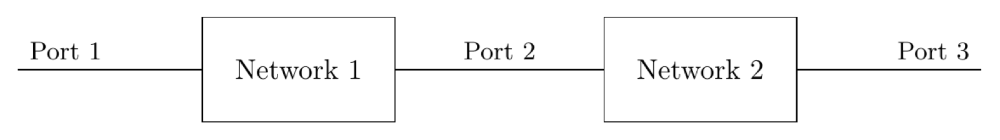
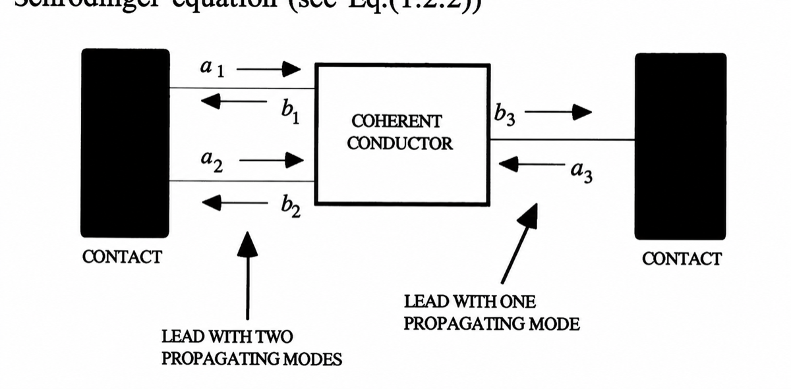

ABCD as a reaction to S-parameters
RF network matrices admit atleast four representations, namely, the impedance matrix, the admittance matrix, the scattering matrix and the ABCD matrix (For 2-port networks). (Pozar 2011)
Out of these, the scattering matrix and ABCD are most common. Here are some comments on them:
Recently I had been reading the thesis of Pawan Khanna (Khanna 2023) and their treatment of the artificial transmission line starts with ABCD parameters. For someone new like me into the field, it perplexed me as to why not the S-parameters??
I got a hint from Pozar's book, cascading!
An artificial transmission line is a 2-port network and the literature designs for a unit-network, which is then repeated multiple times to create a true-time delay transmission line.
If S-parameters are to be used, the cascaded S-parameters are given by Redheffer Star Product (Redheffer 1962) , not at all convenient for analytical work (Trust me, S-parameters are all I had during my masters)
The entire invention of ABCD parameters is to make the cascade analysis easy. So for a series of N-transmission line elements, ABCD parameters ar just N matrix multiplication followed by a single conversion to S-parameters, unlike performing N Redheffer star products. Not only is that a computational headache, but also the place where anlysis goes to die.
Yet, what makes ABCD parameter amenable to cascade?? Let us look at representative S-parameters and ABCD parameters for a 2-port network:

(1) (2)
And between Port-2 and Port-3: (3) (4)
After cascading, the only variables we care about are of Port-1 and Port-3. It is easy to see that we need to "substitute" for variables at Port-2, and we can see the ABCD matrix trivally does that for us: Equation (2) has already solved for Port-2 variables!
Compare this to S-matrix which mixes variables at different ports and the Redheffer star product would have looked something like:
In Defence of S-parameters
But if ABCD parameters are so cool, why do we, in the end, convert to S-parameters. The answer is simple, S-parameter is what we measure in the lab and it has nice physical mapping to the real world - it descends from the ubiquitous concept of travelling waves. ABCD parameters are like the contour in a contour integral, is means to some end, S-parameters are end in themselves.
Why S-parameters need terminated ports
There's another quirk of S-parameter evaluation: the ports need to be terminated by a reference impedance. S-parameters are always wrt a reference impedance. This seems onerous compared to the ABCD, Z or Y matrices where no such external requirement is specified. But this is because S-parameters are supposed to relate various incident and reflected waves from the network, if the termination were not matched, we would be measured a combination of various reflections from the network, the sources and the terminations.
A nicer way is to say that make your transmission lines infinite in length - such that there is no possiblity of reflection in your lifetime and you have S-parameter characterization without any termination requirement. In fact, this is a standard abstraction in mesoscopic physics (and all of physics) (Datta 1995): the leads connecting to the channel are assumed to be semi-infinte in one direction and hence reflectionless:

by making the leads reflectionless and semi-infinite, we get immense analytical capacity, the same translates to matched impedance in the lab That is the charm of S-parameters!